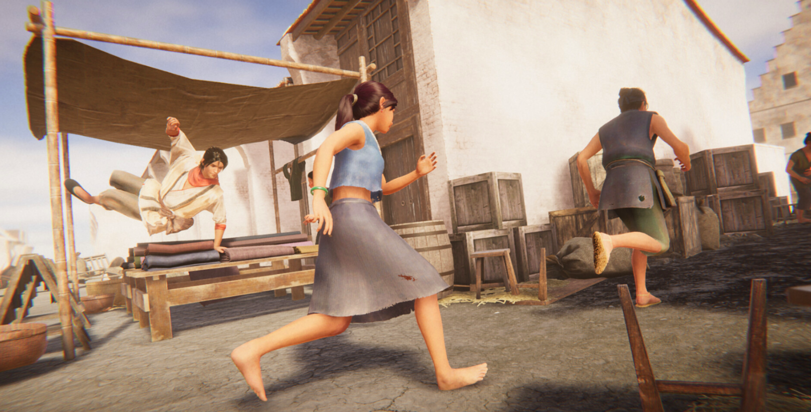
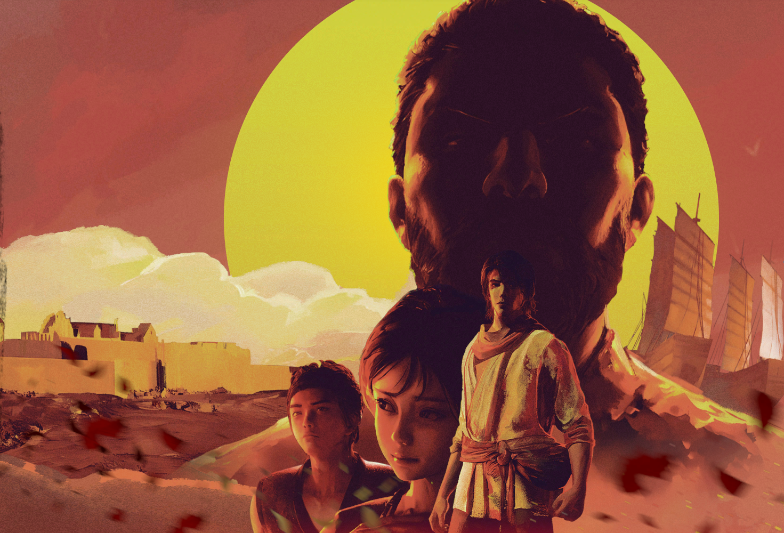
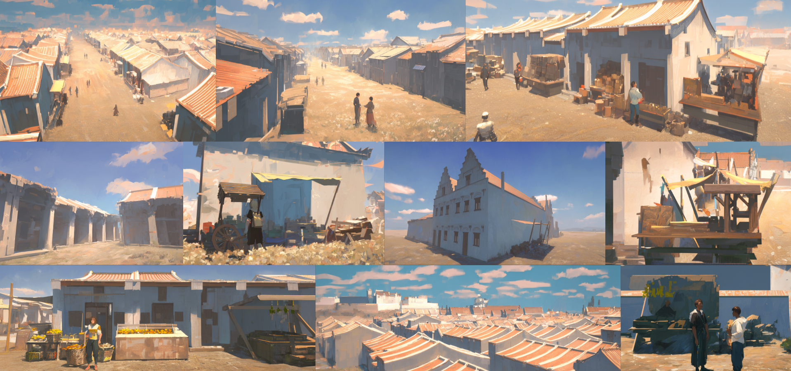
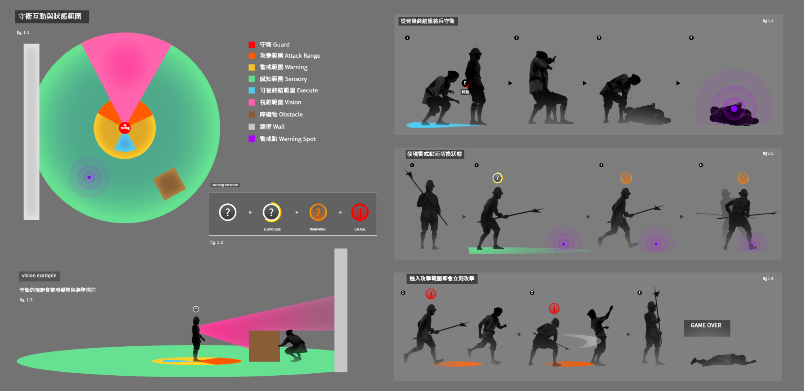
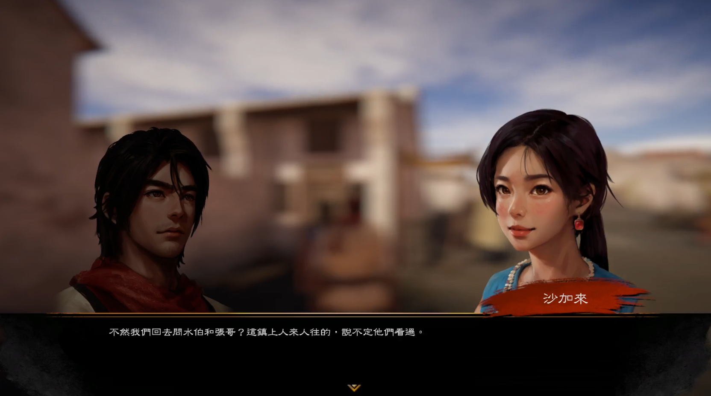
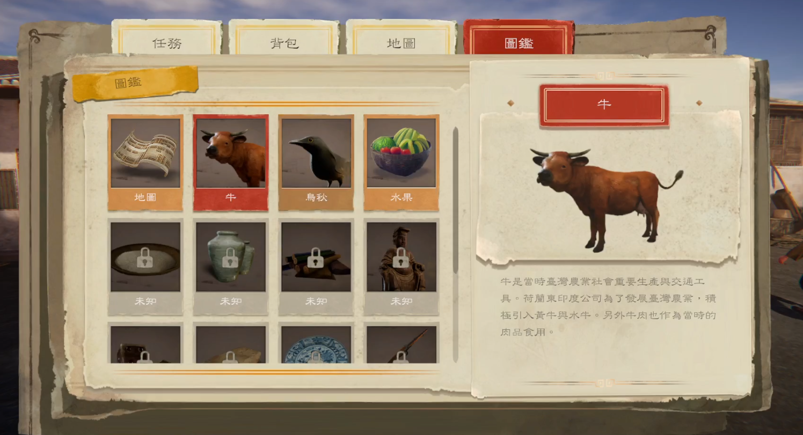
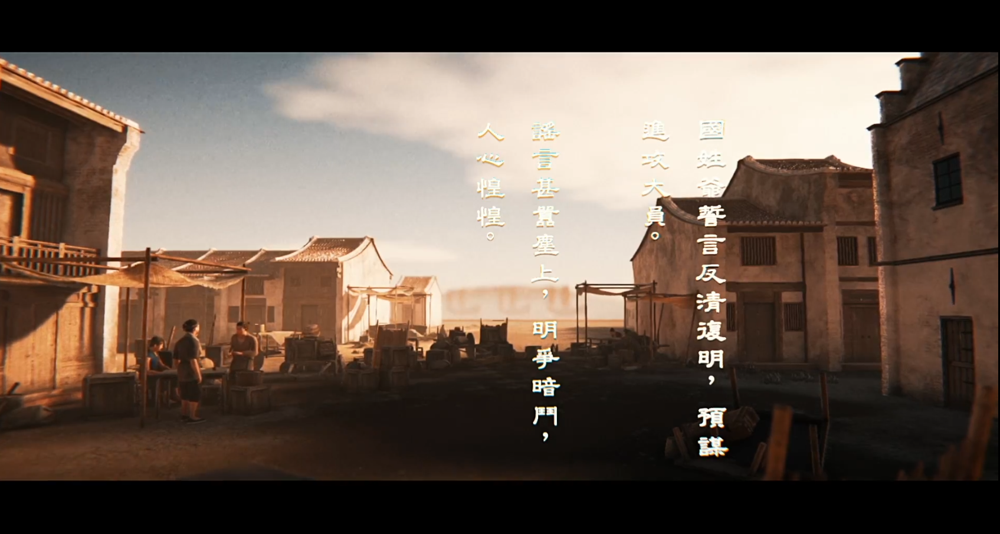
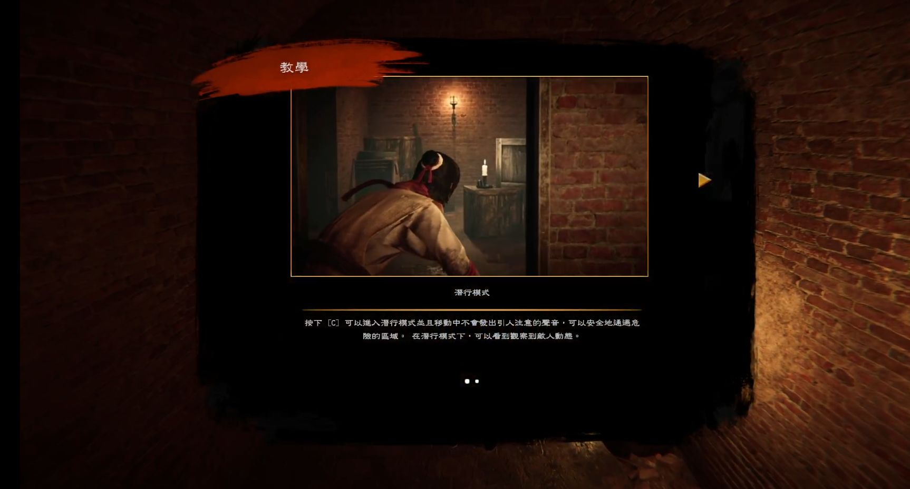
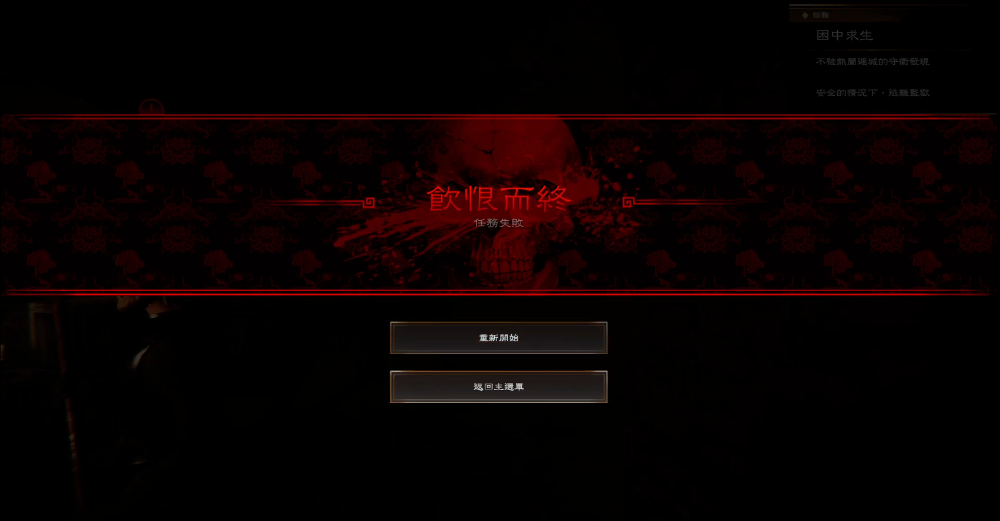
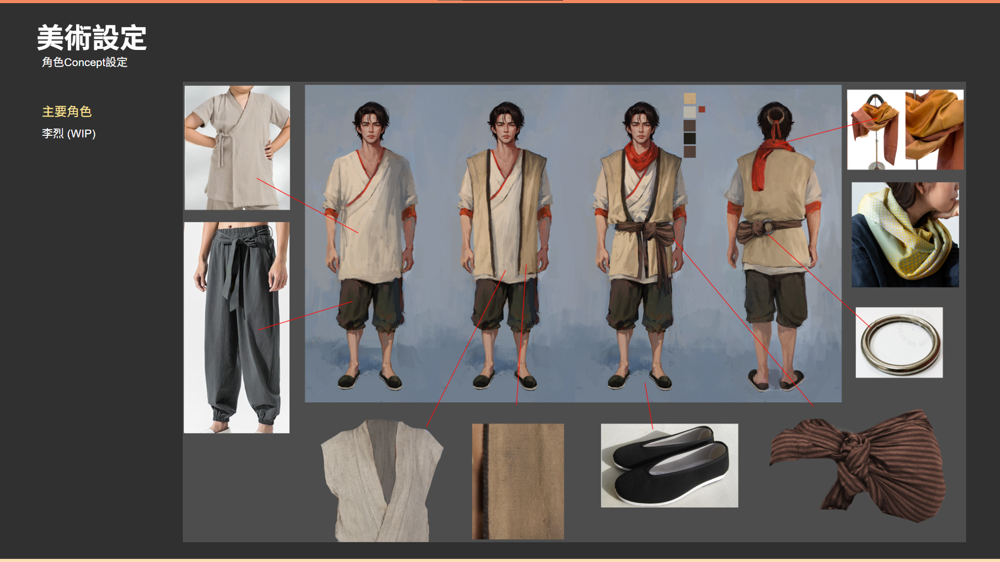

Echoes of Formosa is a story-driven action game that brings players back to 17th-century Taiwan, exploring the perilous land of Zeelandia through a blend of historical context, character-driven narrative, and modern game design.
As Game Director, I defined the core mechanics, story integration, scope, and production milestones, guiding the team from concept to final delivery. As Art Director, I set the visual language of the game—from key art and logo to UI, characters, and cinematics—and supervised the art team throughout production.

This section shows the process of working with Echoes of Formosa — from initial composition and lighting studies through to the final key art. In this section I showcase how the mood, color palette, and focal points evolved to balance historical storytelling with a modern stealth-game silhouette.

The key art that I created for Echoes of Formosa. It features the main characters from the game with heroic poses and strong contrast of color to gives the main villian a menacing look as background. I tried to capture the feeling of vintage look by utilizing the color close to burnt sienna. The characters were drawn with 3D character models posing and painted over in photoshop.

In the very early stage these are the quick drawnings based with 3D blocking models in unity engine to quickly figure out the general mood and tone of the Dayuan city. We want to go with a bright and colorful day for most of the scene to represent the vibrant lifestyle and culture within the city.

One of the example of the design documents where I specified all the details with graph of the stealth mechanics for the character behaviours. It also includes some of the UI design and in-game collision detection specification so it can be easily understood by the programers for easier communication. It is amazing how many little details and thought processes are involved with a simple stealth mechanics that is pretty common in modern game design.

The dialogue system in the game. There are 2D character arts that needs to be prepared for this type of traditional and simple character dialogue system. It was really fun to work on those art assets as it's actually the closest representation of how our characters should look in a HD version. Due to the design and time limitation, we were unable to gives our character models much more fidelity (poly count). So this is the only chance that we can gives our character some love on their facial details.

This is the quest/inventory/map UI design called Traveler's Tome. Because this is a historical game that is based on true time period, so I decided that a notebook type of UI design could gives the overall theme more fitted with the setting and tone rather than a more traditional UI design.

There are a short intro video in the that gives an simple background info for the player so they can get into the story as soon as possible. The style and look was heavily inspired by old martial art films.

An example of the tutorial design and final look. There are several videos produced to help user to navigate the system and certain functionalities. If we have more resources we've done a more elegant solution rather than this simple version of the tutorial.

Death/Restart UI. A simple UI that I'd imagine that our player will probably see a lot during game play....

An example of the design process with our main character Li Bing. A detail of his outfit's design and materials.
Role: Game Director, Art Director
Type: Game / Historical Action Adventure
Year: 2024
Studio: Moonshine Studio
Tools & Tech: Unity Engine, Adobe Creative Suite, Maya, Git
{kind=link}
{kind=link}
{kind=link}
{kind=link}